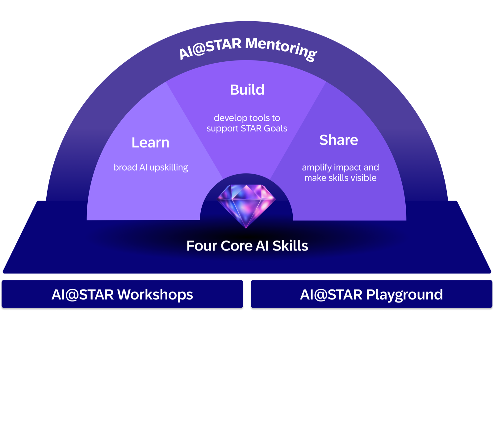
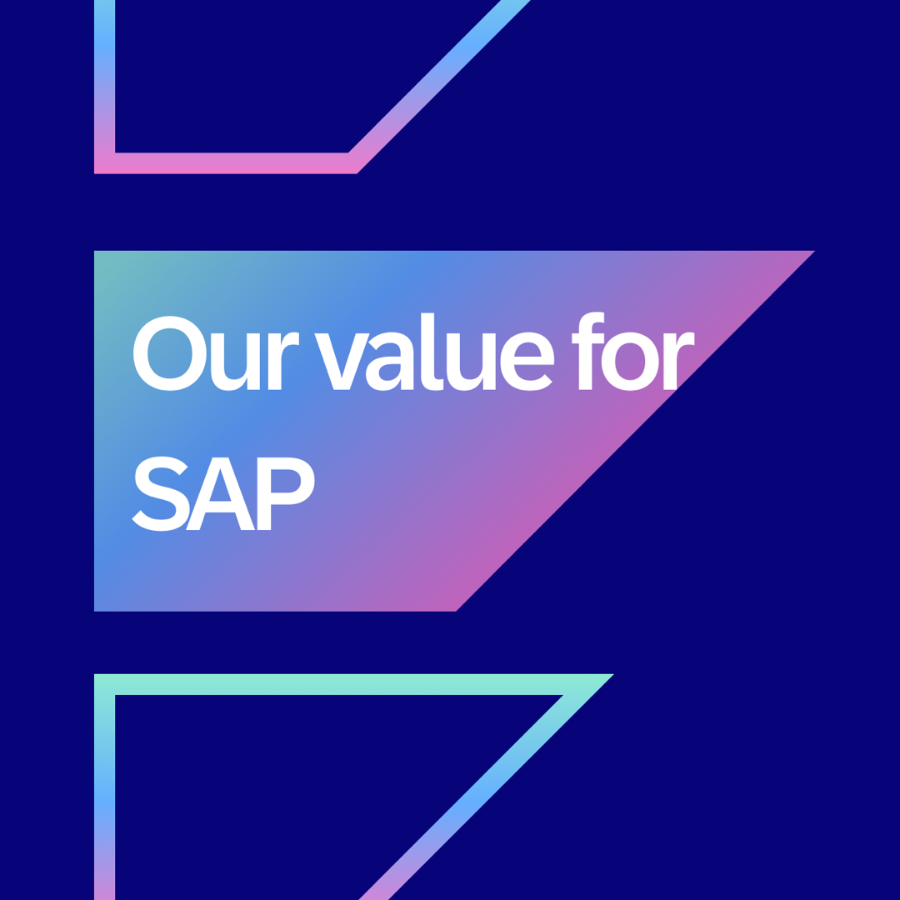
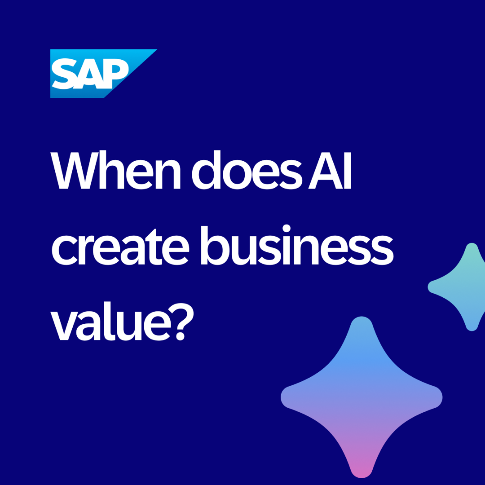

Learn
Broad AI upskilling — building a shared foundation of knowledge every student can rely on.
A student-led AI community at SAP that helps STAR students build real, hands-on AI skills — through workshops, a playground to experiment, and mentoring that turns curiosity into capability.
Build. Learn. Share. ← Back to Work at SAPAI is reshaping how everyone works — and students have always been the ones to adopt new tools first. AI@STAR turns that instinct into a structured community: a place where STAR students at SAP build real AI skills together instead of experimenting in isolation.
The idea is simple but ambitious: give students the space, the guidance and the visibility to go from curious to genuinely AI-ready — and to make that growth count, both for them and for SAP.
As Design Lead, I shaped the brand identity, the visual language and the full social-media campaign that gives AI@STAR its voice: confident, future-facing and unmistakably SAP.
AI@STAR is built on Four Core AI Skills and brought to life through three connected pillars — all held together by mentoring and powered by the AI@STAR Workshops and Playground.

Broad AI upskilling — building a shared foundation of knowledge every student can rely on.
Develop tools that support STAR goals, putting new skills straight into practice.
Amplify impact and make skills visible — so learning benefits the whole community.
Learn, Build and Share aren't separate steps — they reinforce each other. Together they turn a loose interest in AI into a community that keeps leveling up, with every student both learning and teaching.
A series of social posts built around the questions every student is already asking — designed in the AI@STAR brand world of deep navy, holographic gradients and sharp, confident type.





Beyond the screen, AI@STAR lives as a holographic sticker — a small, tangible badge of belonging to the Student AI Community. The gradient catches the light just like the digital brand, carrying “Build. Learn. Share.” out into the real world.
It's a reminder that AI@STAR is not a one-off campaign, but an identity students carry with them — on laptops, in hallways and across the SAP community.

What I take away from this project.
AI@STAR let me build a brand from the ground up — from a single idea to a complete visual identity, concept model and social-media campaign. I learned how to translate a fast-moving, hype-prone topic like AI into a clear, confident voice that feels credible rather than loud. Leading the design gave me ownership over every touchpoint, from the logo and holographic sticker to the posts that start the conversation — and showed me how design can turn a community idea into something students actually want to join.